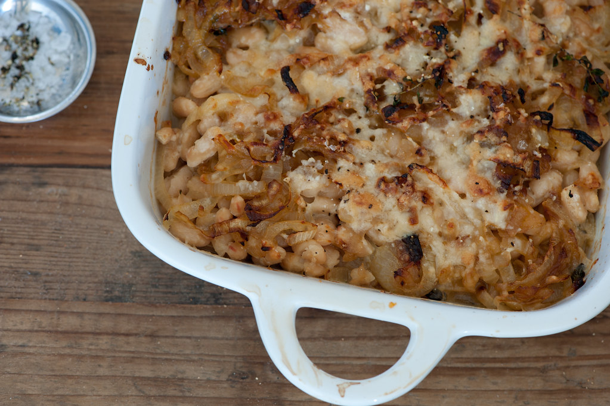

Home
Rice and Beans Casserole

Ingredients
- One can of beans, typically black.
- Half a cup of brown rice.
- Shredded cheese, as much as you would like.
- Salt, pepper, ground cumin, garlic powder, chili flakes, to taste.
Steps
- Preheat the oven to 400 degrees Farenheit.
- Drain the can of beans of most of its liquid and cook the rice either in a pot or rice maker.
- Add rice, beans, spices and some of the cheese into an oven-safe container and mix.
- Cover with aluminum foil and bake for 30 minutes.
- Remove foil, add rest of cheese on top and bake uncovered for another 5 minutes.
- Let rest, and enjoy!